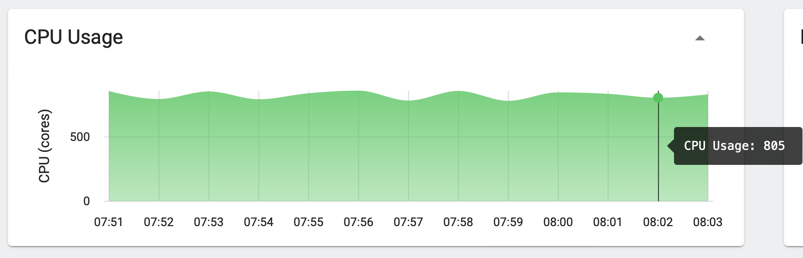
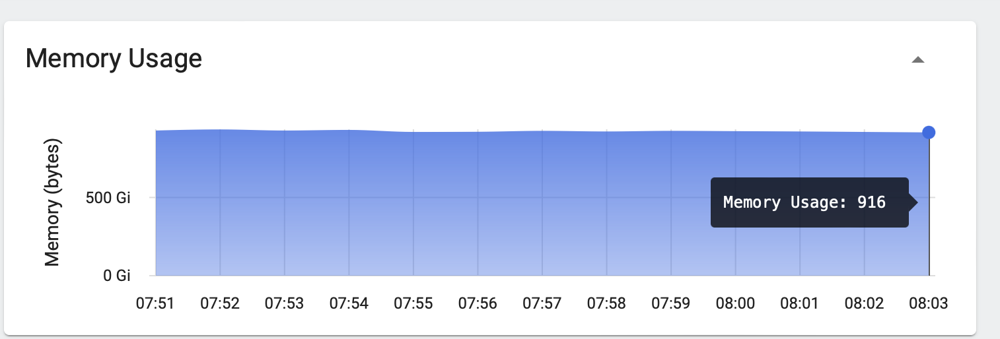
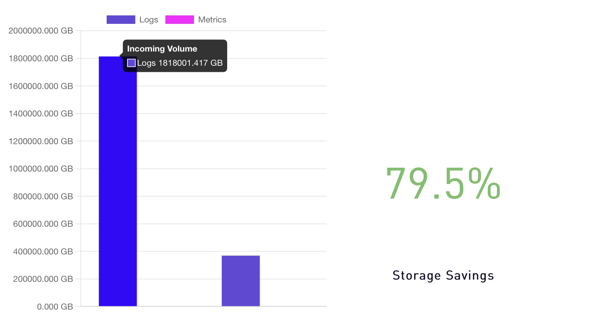
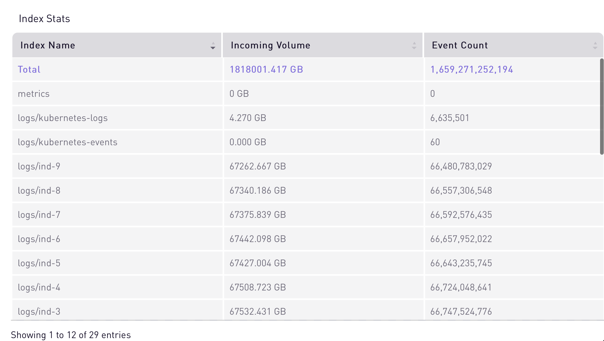

We are thrilled to
announce the groundbreaking success of SigScalr—a cutting-edge
technology designed to alleviate the burden of data volume overload faced by many companies
today. Through an intensive and meticulous testing process, we have achieved
a significant milestone: SigScalr can now seamlessly ingest a staggering 1 PB of data per day. What is even more remarkable is our
achievement of sub-one second query performance,
utilizing a mere 805 vCPUs. This lightning-fast response
time ensures that critical insights are delivered instantaneously. Moreover, our cost-effective
solution translates into an
astonishingly low AWS bill of just $1200 per day. To put
this into perspective, traditional platforms like Splunk, Elastic, or Grafana would result in an
astronomical AWS bill exceeding $100,000.
SigScalr emerges as the clear choice for organizations seeking both unmatched scalability and
cost-efficiency in handling their observability data.
To provide you with a
comprehensive understanding of
our testing process and its remarkable outcomes, we have detailed all the pertinent information
here. If you are interested in verifying our findings
or need assistance in setting up a similar test environment, please don't hesitate to reach out to us. We'll be more than happy to assist you.
If you're interested in
trying SigScalr for your company, contact us at info@sigscalr.io for more
information or book a demo to
learn more.
We utilized a public Git repository to generate a dynamic dataset with high cardinality. Here are some key details about this dataset:
| Num. of log lines | 1 Trillion |
| Total Bytes | 1 Petabyte |
| Log line size | 1000 bytes |
| Num. of Columns | 34 |
| Num. of Columns with 1 Trillion cardinality | 1 |
| Num. of Columns with 100 Billion cardinality | 6 |
| Num. of Columns with free text | 6 |
| Num. of numeric columns | 5 |
| POD Type: | 10 vCPU, 20 GB RAM, 40 GB EBS , S3 |
| Total Num of pods | 100 |
| Num vCPU | 1000 |
| RAM | 2 TB |
| EBS | 4 TB |
| S3 | 200 TB |
| POD Type: | 10 vCPU, 25 GB RAM, 50 GB EBS |
| Total Num of pods | 1 |
| Num vCPU | 10 |
| RAM | 25 GB |
| EBS | 50 GB |
| POD Type: | 7 vCPU, 2 GB RAM |
| Total Num of pods | 75 |
| Num vCPU | 525 |
| RAM | 150 GB |
The following graphs demonstrate our successful ingestion of a large 1 Petabyte volume of data. Over a continuous period of 24+ hours, we maintained a consistent ingestion rate of 44 TB per hour, showcasing the scalability and reliability of SigScalr in handling such high data volumes.
Each logline ingested during our testing was unique, resulting in a total cardinality of one trillion. The graph below illustrates SigScalr's remarkable performance, as it successfully ingested 44 billion events per hour, accumulating a total of over one trillion events within a 24-hour period. This accomplishment further underscores the scalability and efficiency of SigScalr in handling massive data workloads.
Even though we had allocated 1000 vCPU for the ingest pods, we ended up using on average just 805 vCPUs while processing a petabyte of data.
Even though we had allocated 2 TB of RAM for the ingest pods, we ended up using only 916 GB.
SigScalr takes the incoming data, converts it into columnar segments and columnar micro indices. Compression is dynamic in nature for each segment based on the shape of the data. These segments are periodically uploaded to S3 for high durability, longer retention and query scaleout. At the end of the test our storage statistics were as follows.
As seen in the graph below, each index had over 67 TB of data and 66 Billion unique events.
SigScalr's exceptional performance extended beyond data ingestion, as queries seamlessly operated during and after the ingestion of the entire petabyte dataset. Maintaining query response times below 3 seconds, SigScalr efficiently processed queries while combing through the massive volume of data.
batch=batch-123 for a 3-hour lookback batch=batch-123 for a 30 days lookback Enterprises dealing with large volumes of data must carefully consider the compute resources they consume. While many organizations opt for open source software initially due to its perceived cost advantage, the reality is that hidden expenses, such as compute and maintenance costs, start to accumulate over time. To shed light on this matter, we conducted a comparative analysis to demonstrate the true cost implications of installing SigScalr within your network compared to popular alternatives like Elasticsearch or Splunk. Below, we present a snapshot of our AWS bill for a single day, providing an insightful glimpse into the significant cost savings achievable with SigScalr.
Our total cost for running this test was a mere $1200 for the full 24-hour period. In comparison, any other solution in the industry would have costed a minimum of $100,000.
The observability market offers numerous solutions, but their
pricing and compute requirements often
remain unclear, leading to large cloud expenses. To address this concern and meet the
escalating demands of today's data landscape,
we undertook an exercise to determine the cost of running SigScalr within the network
while evaluating its scalability.
Our open-source test data
generator allows you to compare SigScalr against any other vendor. Furthermore, we offer
assistance in
setting up SigScalr in your network for a personalized evaluation. Handling the
substantial volume of one Petabyte with efficient response rates, SigScalr ensures
significantly reduced
operational costs.
Interested in
exploring more on how you can implement affordable observability solutions without
breaking the bank with SigScalr? Contact us now!